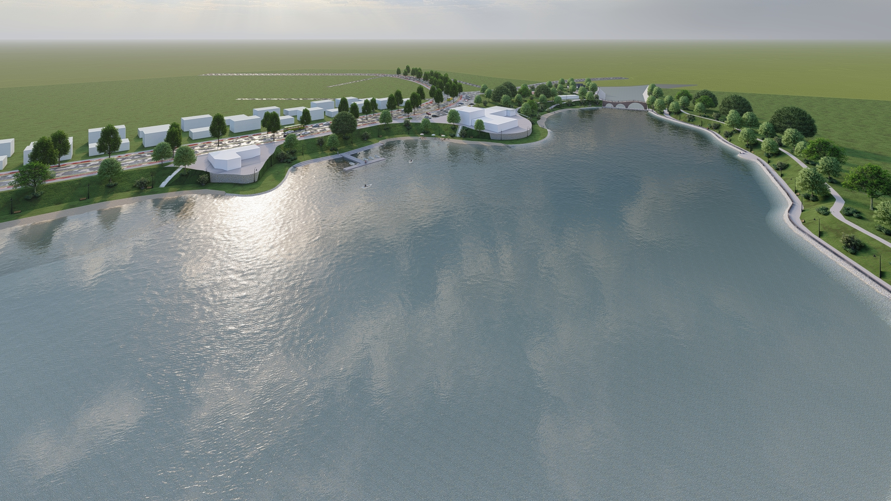

Inxhinieria Hidroteknike është dega e inxhinierisë që përfshin projektimin, ndërtimin, dhe menaxhimin e sistemeve dhe strukturave të lidhura me ujin. Kjo përfshin trajtimin e ujërave, infrastrukturën hidrike, menaxhimin e burimeve të ujit, shpërndarjen e ujit të pijshëm, kanalizimin dhe trajtimin e ujërave të zeza, dhe zhvillimin e përdorimit të energjisë ujore. Inxhinieria Hidroteknike është e lidhur ngushtë me fushat e tjera të inxhinierisë dhe shkencave natyrore, duke përfshirë inxhinieri civile, inxhinieri mjedisore, inxhinieri elektrike dhe inxhinieri mekanike. Kjo fushë është e rëndësishme për të siguruar që burimet ujore të përdoren efikas dhe që infrastruktura e lidhur me ujin të jetë e qëndrueshme dhe e sigurt për komunitetet dhe mjedisin.
Projektimi i sistemeve ujore: Përfshin planifikimin dhe projektimin e rrjeteve ujore, të cilat mund të përfshijnë rrjete të ujit të pijshëm, kanalizime, dhe infrastrukturë për trajtimin e ujërave të zeza;
Menaxhimi i burimeve ujore: Kjo përfshin studimin dhe menaxhimin e burimeve ujore, përfshirë burimet natyrore si lumenjtë, liqenet, dhe akumulimet e ujit;
Trajtimi i ujërave: Inxhinieria Hidroteknike fokusohet në zhvillimin dhe implementimin e teknologjive për trajtimin e ujërave, duke siguruar që uji të jetë i sigurt për përdorim.
Inxhinieria Hidroteknike është e rëndësishme për zhvillimin e qëndrueshëm dhe të qëndrueshëm të mjedisit dhe shoqërisë, duke siguruar që burimet ujore të përdoren me efikasitet dhe me kujdes për të mbrojtur mjedisin dhe të përmbushur nevojat e njerëzve për ujë të pastër dhe të sigurt.